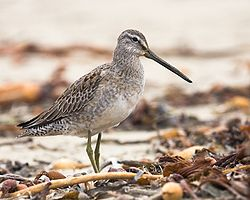
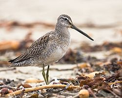

| Long-billed Dowitcher | |
|---|---|
|  | |
| Conservation status | |
| Binomial name | |
| Limnodromus scolopaceus (Say, 1823) |
| Long-billed Dowitcher | |
|---|---|
|  | |
| Conservation status | |
| Binomial name | |
| Limnodromus scolopaceus (Say, 1823) |
The Long-billed Dowitcher, Limnodromus scolopaceus, is a medium-sized shorebird.
Adults have yellowish legs and a long straight dark bill. The body is dark brown on top and reddish underneath with spotted throat and breast, bars on flanks. The tail has a black and white barred pattern. The winter plumage is largely grey.
Their breeding habitat is wet tundra in the far north of North America and eastern Siberia. They nest on the ground, usually near water.
They migrate to the southern United States and as far south as Central America. Long-billed Dowitcher is a rare but regular visitor to western Europe, with some individuals staying for long periods.
These birds forage by probing in shallow water or on wet mud. They mainly eat insects, mollusks, crustaceans and marine worms, but also eat some plant material.
They are more likely to be seen near fresh water than the Short-billed Dowitcher.

{kind=link}